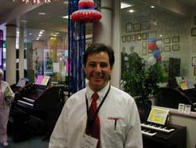

« The Album - Zot | Main | e-mail from E. Hostetter »
Where are they now?
Good question. It looks like the members of the band went their separate ways after Zot's short lived success. Randy Wayne shows up in the credits of a few Rod Stewart albums playing Keyboards. I saw Bryant Simpson's name on the credits of Lindsey Buckingham's album "Go Insane" playing bass. Patrick Knowles, who was responsible for a lot of the arrangements of Zot's music is now managing a store for the world's largest home organ retailer. He reportedly spends his days playing big band music for retirees and then selling them expensive organs.
Patrick Knowles

Photo courtesy of Michael Cooney
Posted by Bill at January 11, 2003 5:00 PM
Comments
Bill,
I just want to thank you for what you have unknowingly provided to so many people who were affected by Patrick in their lives. Because of your website, I was able to contact and speak with Pat about a year ago when we first emailed, then we spole about six months ago for the last time. Today is his memorial service..
The Patrick I remember:
" bright green eyes, infectious laughter, heart of gold, listening to old Queen albums on rainy days, Pat playing "Martha My Dear" on piano, Moose Juice at Jimmy Sena's house, Basic Electronics at Marina High School, going to his Mom's house during lunch breaks to listen to old Gary Numan albums, going to the Palladium to see Storm, a close friend when my Dad died when I was 19, riding and hanging with Pat at his Top 40 gigs, when I was 16 walking to his house with my guitar to learn some new things. Thank you Pat for befriending a quiet, lonely kid and teaching me to express my soul in music. I still do to this very day. I will miss you my friend, and love you like the brother I never had. You sweet man, in God's arms you rest. And I pray for HIS peace in the hearts of your family and friends.
Curtis
Posted by: chelton at February 13, 2005 3:14 AM
Bill, My Sister told about your Zot site.
Pat was my dearest and best friend.
I also loved him like a Brother.
we grew up on the same street in HB,
Played in Bands together,skied in Utah,
and Loved Music. I was planing on playing
Music with him and some other friends again.
See you in Heaven Pat.God bless your Family.
Bryan
Posted by: Bryan at February 21, 2005 3:35 PM
Hi I'm Randy Wayne's 11yer old son first time being on this site ,but wow!It's very sade that Pat Past Away Although I didn't know him what my dad say's about him make him sound like a great person'and it suck's I never got to met him.From what I'v heard from my dad's an friend's band it's great! Thomas Griest Wrote 11/02/05
P.S If you give me an address I will send an atachment of some of my dads new songs!and a photo of my dad and me.
Posted by: Thomas at November 4, 2005 3:15 PM
Oh, my world. It is ok
Posted by: Stephan at May 28, 2006 12:24 AM
WHy all these things happen?
Posted by: Mister at May 29, 2006 2:45 PM
I know Randy personally. I named with him a few times and once at church. He's still playing hard on the keys. Check this video of hom, my buddy on guitar and me drumming. We were just jamming making stuff up.
Posted by: Nathan herbold at August 10, 2018 8:02 AM
Post a comment


{kind=link}